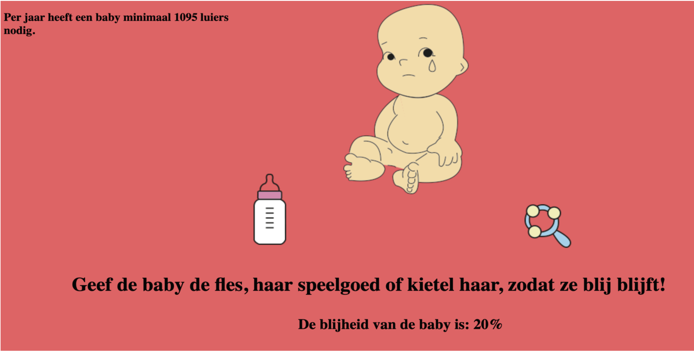
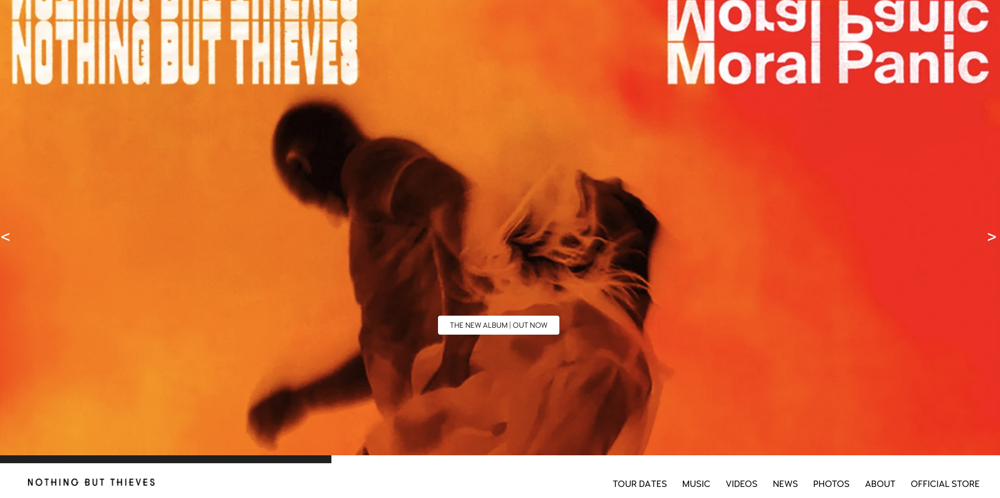

Hi, ik ben Lotte Koblens. tweedejaars student CMD
Mijn projecten
-
Mijn eerste website

In het eerste jaar van de opleiding heb ik mijn eerste website gemaakt. Bij het vak Internetstandaarden leerden we de volledige basis van HTML en een klein beetje CSS. Uiteindelijk heb ik het wel voor elkaar gekregen om de afbeeldingen op de plek te zetten waar ik ze wilde hebben, maar mijn website heb ik niet responsive gekregen. Dit is dan ook een onderdeel waarin ik mezelf nog verder in wilde ontwikkelen.
Link naar de website -
Tamagotchi
In het eerste jaar van de opleiding heb ik ook kennis gemaakt met programmeren. Dit was voor mij ook nog volledig onbekend en was daarom ook nog best een uitdaging om onder de knie te krijgen. Ik heb bij dit vak gekozen om een tamagotchi te maken van een baby aangezien mijn leraar toen bijna een kindje kreeg. Wanneer de baby geen aandacht krijgt, wordt hij steeds verdrietiger en zal de baby uiteindelijk gaan huilen. De baby kan weer opgevrolijkt worden door de fles te krijgen of door met hem te spelen.
Link naar Tamagotchi -
Namaakwebsite
In het tweede jaar van de opleiding heb ik het vak Front-end Development gevolgd. Bij dit vak moesten we twee pagina's van een website namaken. Ik heb de homepagina en de music pagina van https://www.nbthieves.com/ nagemaakt. Helaas is het mij niet gelukt om de image slider die op de homepagina staat werkend te krijgen, maar dat kwam ook deels door tijdgebrek.
Link naar namaakwebsite